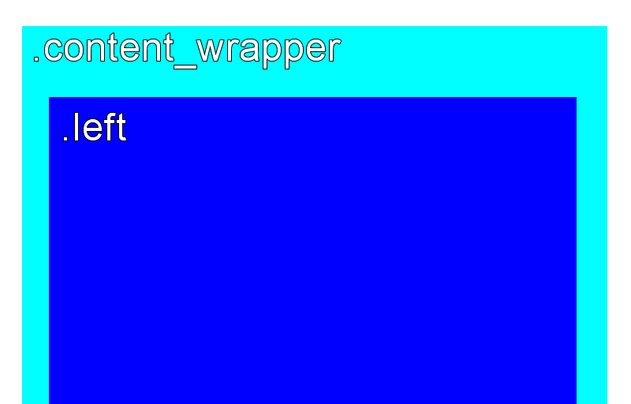

Increasing the base font size from 11px to 16px required expanding some page elements to the full width of the page by making a few structural changes.
Additionally, the html structure around the multi-column layout was particularly unintuitive and required far more CSS specificity than necessary in order to properly style web content. It was simplified.
The following images are abstractions of the structure of the page, with major content areas labeled and highlighted with colors. Grey is used for markup that serves a primarily structural purpose. A '#' or a '.' is used to differentiate between IDs and classes, respectively.
